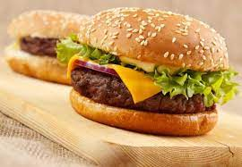

BURGER TIME
The classic burger is an all time BBQ favourite!
This super easy homemade beef burger recipe gives
you delicious patties, packed with onions and herbs
for extra flavour, that are perfect for topping with
cheese, lettuce and tomato, and sandwiching between
floury buns.
Ingredients
- ½ tbsp olive oil
- 1 onion, peeled and finely chopped
- 1 x 500g pack British Beef Steak Mince 15% fat
- 1 tsp mixed dried herbs
- 1 egg, beaten
- 4 slices mature Cheddar (optional)
- 4 white rolls
- few round lettuce leaves, torn
- 1 beef tomato, sliced
- ketchup, to serve (optional)
Method
- Heat the olive oil in a frying pan, add the onion and cook for 5 minutes until softened and starting to turn golden. Set aside.
- a bowl, combine the beef mince with the herbs and the egg. Season, add the onions and mix well. Using your hands, shape into 4 patties.
- Cook the burgers on a preheated barbecue or griddle for 5-6 minutes on each side. While the second side is cooking, lay a slice of cheese on top to melt slightly (if using).
- Meanwhile, lightly toast the cut-sides of the buns on the barbecue. Fill with the lettuce, burgers and tomato slices. Serve with ketchup, if you like.
Enjoy your meal
Return to top
-----------------------
Back home